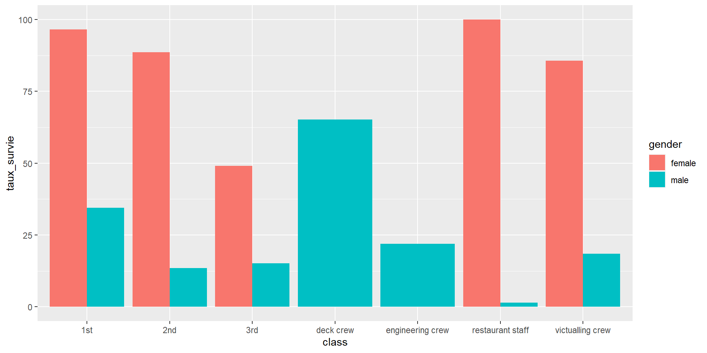

2022-2023
M2 Expertise Sciences des Populations
Séance 2
Arno Muller
Correction de l’exercice de la semaine dernière (~20min)
Au choix :
Cours d’introduction aux données longitudinales (~40min) + Pratique sur R (~40min)
1h30 de pratiques sur R : Atelier pratique méthodes quantitatives
“Je me pose une question, comment y répondre ?”
Méthodes bivariées, multi-variées (ACM + régression)
A partir de la base Titanic :
Exercice 1 : vecteur et variable
De quelle type est la variable country ? la variable sibsp ?
'data.frame': 2207 obs. of 9 variables:
$ gender : chr "male" "male" "male" "female" ...
$ age : chr "42,0000000000" "13,0000000000" "16,0000000000" "39,0000000000" ...
$ class : chr "3rd" "3rd" "3rd" "3rd" ...
$ embarked: chr "Southampton" "Southampton" "Southampton" "Southampton" ...
$ country : chr "United States" "United States" "United States" "England" ...
$ fare : chr "7,1100" "20,0500" "20,0500" "20,0500" ...
$ sibsp : int 0 0 1 1 0 0 1 1 0 0 ...
$ parch : int 0 2 1 1 0 0 0 0 0 0 ...
$ survived: chr "no" "no" "no" "yes" ...[1] "character"[1] "integer"Créez une variable “famille”, qui fait la somme de sibsp et parch
Créez une variable “pays_abrev” qui prend pour valeur les 3 premiers caractères de la réponse à la variable “country”
Arg Aus Bel Bos Bul Can Cha Chi Cro Cub Den Egy Eng Fin Fra Ger
7 8 22 4 19 34 17 1 23 1 7 1 1125 54 26 6
Gre Guy Hun Ind Ire Ita Jap Lat Leb Mex Net Nor Per Pol Rus Sco
2 1 7 8 137 11 1 1 71 1 2 47 2 3 2 36
Sia Slo Sou Spa Swe Swi Syr Tur Uni Uru Wal Yug
2 5 6 9 105 18 1 6 264 2 20 1 Créez un variable “ville_pays” qui colle les réponses à “pays_abrev” et “country”
[1] Uni Eng Nor Fra Leb Fin Swe Arg Can Den Bul Swi Cha Bos Hun
[16] <NA> Ire Ita Ind Wal Sou Cro Sco Sia Uru Bel Pol Aus Per Spa
[31] Egy Jap Syr Rus Slo Gre Tur Chi Lat Yug Ger Cub Net Mex Guy
44 Levels: Arg Aus Bel Bos Bul Can Cha Chi Cro Cub Den Egy Eng Fin Fra ... YugExercice 2 : Tables
Combien de survivant·e·s ? Y a-t-il des valeurs manquantes ?
Combien de survivant·e·s par sexe ?
Les femmes ont-elles significativement plus survécues que les hommes ? Utilisez des pourcentages lignes ou colonnes, et un test du chi²
| female | male | Total | |
|---|---|---|---|
| no | 8.68984 | 91.31016 | 100 |
| yes | 50.49226 | 49.50774 | 100 |
| Ensemble | 22.15677 | 77.84323 | 100 |
| female | male | Ensemble | |
|---|---|---|---|
| no | 26.58487 | 79.51106 | 67.78432 |
| yes | 73.41513 | 20.48894 | 32.21568 |
| Total | 100.00000 | 100.00000 | 100.00000 |
Pearson's Chi-squared test with Yates' continuity correction
data: dt$survived and dt$gender
X-squared = 485.87, df = 1, p-value < 2.2e-16Exercice 3 : Pour aller plus loin :
Moyenne d’âge à bord ? Par sexe ?
[1] "character" [1] "16,0000000000" "25,0000000000" "30,0000000000" "28,0000000000"
[5] "27,0000000000" "20,0000000000" "30,0000000000" "27,0000000000"
[9] "40,0000000000" "0,8333333333" "18,0000000000"[1] "character"[1] "numeric" [1] 16.0000000 25.0000000 30.0000000 28.0000000 27.0000000 20.0000000
[7] 30.0000000 27.0000000 40.0000000 0.8333333 18.0000000[1] NA[1] 30.43673[1] 29.04857[1] 29.04857[1] 30.83231library(tidyverse)
dt2 <- dt %>%
group_by(gender) %>%
summarise(moyenne = mean(age_num, na.rm = T ))
dt2# A tibble: 2 × 2
gender moyenne
<chr> <dbl>
1 female 29.0
2 male 30.8Prix moyen du ticket ? par pays ?
Faire une représentation graphique rapide de une ou plusieurs variables de votre choix
dt4 <- dt %>%
group_by(class,gender,survived) %>%
summarise(nombre = n())
dt5 <- dt %>%
group_by(class,gender) %>%
summarise(total = n())
dt6 <- dt4 %>%
left_join(dt5) %>%
mutate(taux_survie = (nombre/total)*100) %>%
filter(survived == "yes") %>%
select(class, gender, taux_survie)
ggplot(data=dt6, aes(x=class, y=taux_survie, fill=gender)) +
geom_bar(stat="identity", position=position_dodge())
Utilisez un des jeux de données suivants pour imaginer une question, réfléchir à comment vous pourriez y répondre, vérifiez si les données vous permettent de le faire et tentez d’y répondre puis réfléchir aux nouvelles hypothèses que vos résultats ouvrent.
La fonction ifelse :
DATA$NOUV_VAR <- ifelse(CONDITIONS , “Valeurs si succès”, “Valeurs si echec”)
Exemple
library(tidyverse)
library(questionr)
data(hdv2003)
# Variable dichotomique
hdv2003 <- hdv2003 %>%
mutate(freres_soeurs_dicho = ifelse(freres.soeurs == 0, "Enfant_Unique","Freres.Ou.Soeurs"))
table(hdv2003$freres_soeurs_dicho)
Enfant_Unique Freres.Ou.Soeurs
167 1833 # Variable avec 3 catégories
hdv2003 <- hdv2003 %>%
mutate(type_famille = ifelse(freres.soeurs == 0, "Enfant_Unique",
ifelse(freres.soeurs %in% c(1:3), "Famille_Tradi",
"Famille_Nombreuse")))
table(hdv2003$type_famille)
Enfant_Unique Famille_Nombreuse Famille_Tradi
167 715 1118 Présentation des résultats de l’atelier
Quelle question de départ ?
Réponse
Limite de la recherche
Ouverture
Début du cours : Introduction aux analyses longitudinales
Questions de recherches
Données
Méthodes